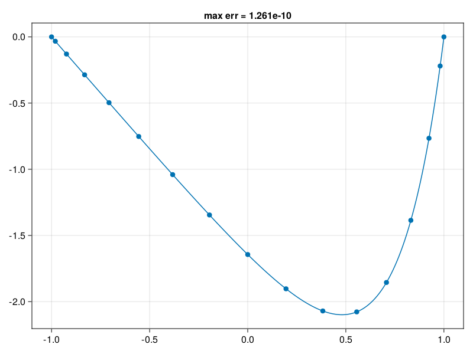
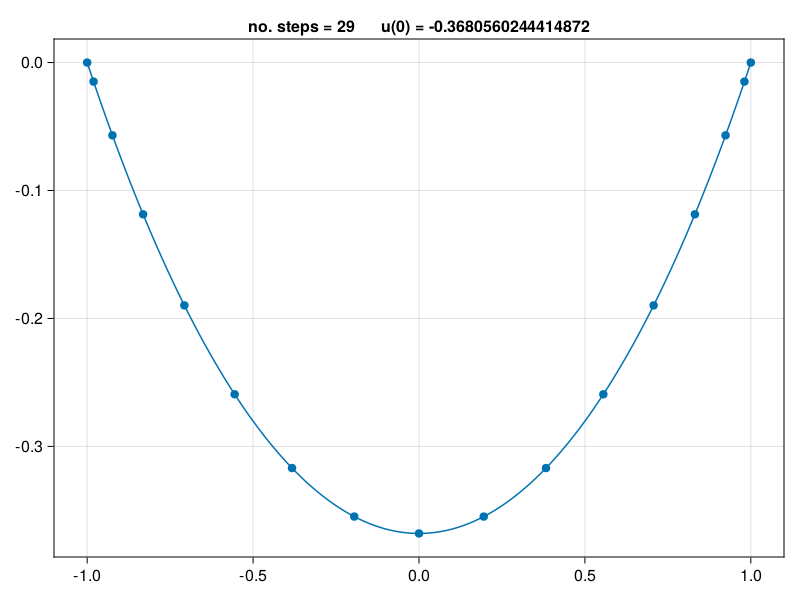
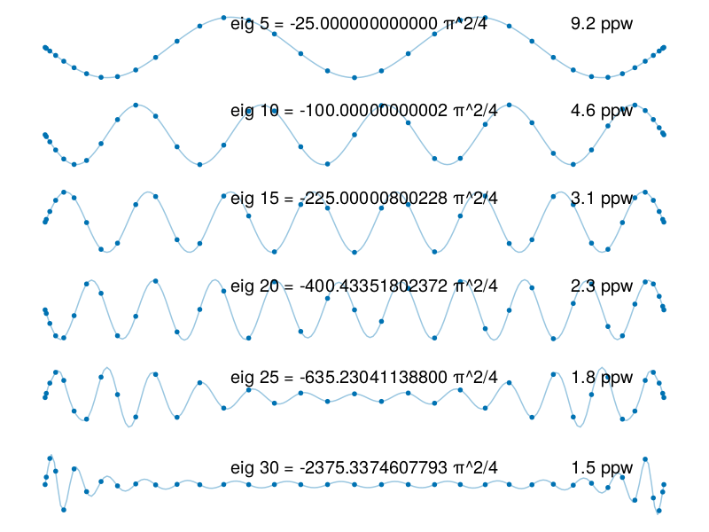
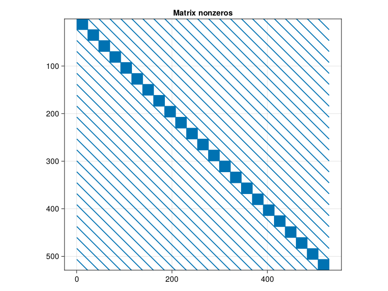
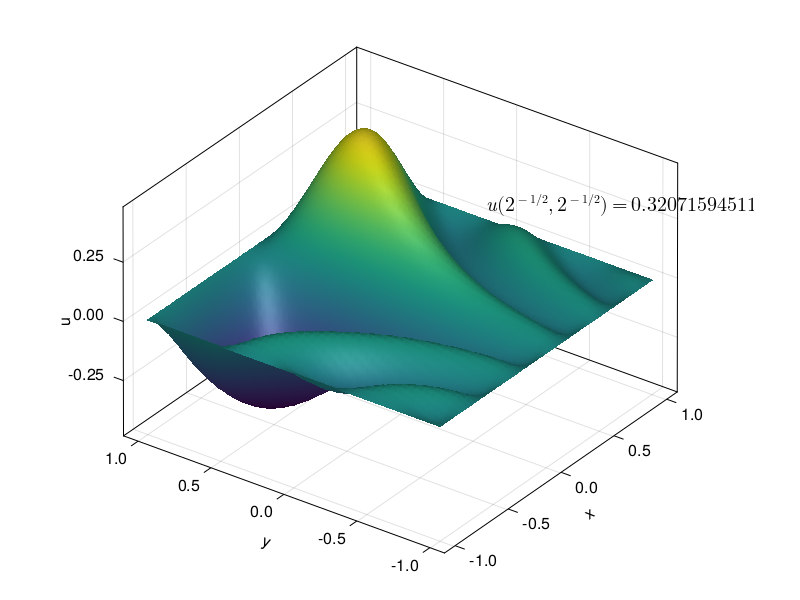
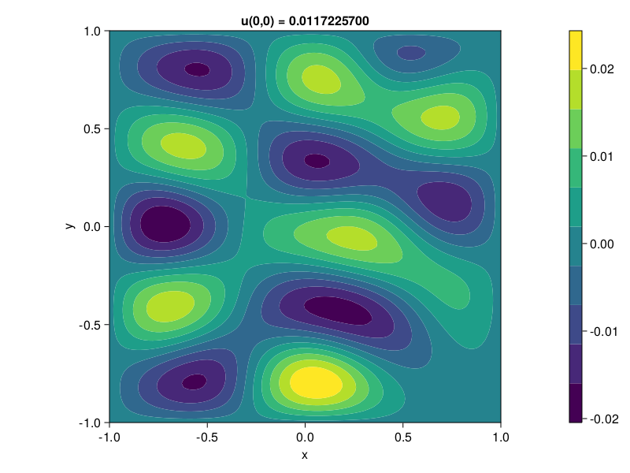

BVPs
Contents
7. BVPs#
include("smij-functions.jl");
7.1. p13: solve linear BVP#
\[u_{xx} = \exp(4x),\; u(-1)=u(1)=0\]
N = 16
D, x = cheb(N)
D² = (D^2)[2:N, 2:N] # boundary conditions
f = @. exp(4x[2:N])
u = D² \ f # Poisson eq. solved here
u = [0; u; 0]
xx = -1:0.01:1
uu = polyinterp(x, u).(xx) # interpolate grid data
exact = @. (exp(4xx) - sinh(4) * xx - cosh(4)) / 16
err = norm(uu - exact,Inf)
1.2609691069087603e-10
using CairoMakie, PyFormattedStrings
fig = Figure()
Axis( fig[1, 1], title=f"max err = {norm(uu-exact,Inf):.4g}" )
scatter!(x, u)
lines!(xx, uu)
fig

7.2. p14: solve nonlinear BVP#
\[u_{xx} = \exp(u),\; u(-1)=u(1)=0\]
N = 16
D, x = cheb(N)
D² = (D^2)[2:N, 2:N]
u = zeros(N - 1)
change = 1
it = 0
while change > 1e-15 # fixed-point iteration
unew = D² \ exp.(u)
change = norm(unew - u, Inf)
u = unew
it += 1
end
u = [0; u; 0]
xx = -1:0.01:1
uu = polyinterp(x,u).(xx);
fig = Figure()
Axis( fig[1, 1], title="no. steps = $it u(0) = $(u[N÷2+1])" )
scatter!(x, u)
lines!(xx, uu)
fig

7.3. p15: solve eigenvalue BVP#
\[u_{xx} = \lambda u, \; u(-1)=u(1)=0\]
N = 36
D, x = cheb(N)
D² = (D^2)[2:N, 2:N]
λ, V = eigen(D², sortby = (-)∘real)
xx = -1:0.01:1
results = []
for j in 5:5:30 # plot 6 eigenvectors
u = [0; V[:, j]; 0]
uu = polyinterp(x,u).(xx)
push!(results, (;j,u,uu))
end
using Makie.Colors
fig = Figure()
for (i,r) in enumerate(results)
ax = Axis(fig[i, 1])
scatter!(x, r.u, markersize=8)
line = lines!(xx, r.uu, linealpha=0.5)
color = line.color[]
line.color[] = Colors.RGBA(color.r,color.g,color.b,0.4)
hidespines!(ax); hidedecorations!(ax)
j = r.j
text!(-0.4, 0.12, text=f"eig {j} = {λ[j]*4/π^2:#.14g} π^2/4", textsize=20)
text!(0.7, 0.12, text=f"{4*N/(π*j):.2g} ppw", textsize=20)
end
fig

7.4. p16: Poisson eq. on [-1,1]×[-1,1] with \(u=0\) on boundary#
N = 24
# Set up grids and tensor product Laplacian and solve for u:
⊗ = kron
D, x = D, y = cheb(N)
F = [ 10sin(8x * (y - 1)) for x in x[2:N], y in y[2:N] ]
D² = (D^2)[2:N, 2:N]
L = I(N-1) ⊗ D² + D² ⊗ I(N-1) # Laplacian
@elapsed u = L \ vec(F) # solve problem and watch the clock
# Reshape long 1D results onto 2D grid (flipping orientation):
U = zeros(N+1, N+1)
U[2:N, 2:N] = reshape(u, N-1, N-1)
value = U[N÷4 + 1, N÷4 + 1]
# Interpolate to finer grid and plot:
xx = yy = -1:0.04:1
UU = gridinterp(U,xx,yy);
using SparseArrays
fig = Figure()
Axis(fig[1, 1], title="Matrix nonzeros", aspect=DataAspect())
row,col,_ = findnz(sparse(L))
scatter!(row, col, markersize=3)
ylims!((N-1)^2, 1)
fig

using LaTeXStrings
fig = Figure()
ax3 = Axis3(fig[1, 1], xlabel="x", ylabel="y", zlabel="u")
surface!(xx, yy, UU)
ax3.azimuth = 6π / 5; ax3.elevation = π / 6
val = f"{value:.11g}"
text!(0.4, -0.3, 0.3, text=latexstring("u(2^{-1/2},\\,2^{-1/2}) = "*val))
fig

7.5. p17: Helmholtz eq.#
\[u_{xx} + u_{yy} + k^2 u = f\]
N = 24
# Set up spectral grid and tensor product Helmholtz operator:
⊗ = kron
D, x = D, y = cheb(N)
F = [exp(-10 * ((y - 1)^2 + (x - 0.5)^2)) for x in x[2:N], y in y[2:N]]
D² = (D^2)[2:N, 2:N]
k = 9
L = I(N-1) ⊗ D² + D² ⊗ I(N-1) + k^2 * I
# Solve for u, reshape to 2D grid, and plot:
u = L \ vec(F)
U = zeros(N+1, N+1)
U[2:N, 2:N] = reshape(u, N-1, N-1)
xx = yy = -1:1/50:1
UU = gridinterp(U, xx, yy)
value = U[N÷2 + 1, N÷2 + 1]
0.01172257000265279
fig = Figure()
Axis(
fig[1, 1],
aspect = DataAspect(), xlabel="x", ylabel="y",
title = f"u(0,0) = {value:.10f}"
)
co = contourf!(xx, yy, UU)
Colorbar(fig[1,2], co)
fig
